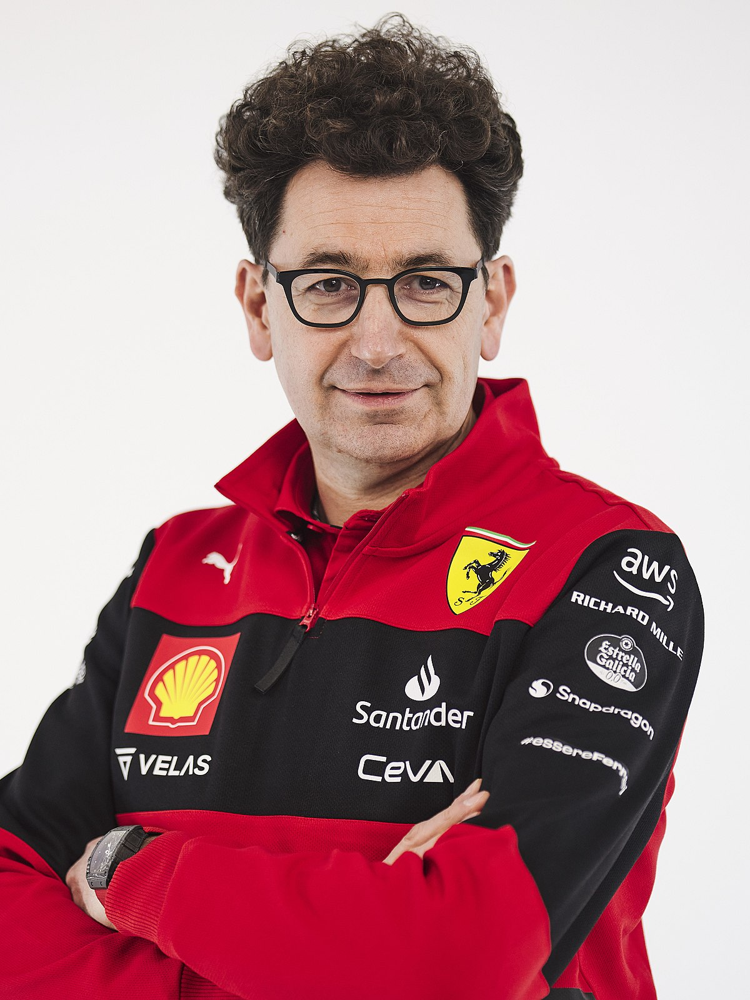

比诺托，全名马蒂亚·比诺托，1969年11月3日出生于瑞士洛桑。本科毕业于洛桑联邦理工学院，机械工程学士学位；硕士毕业于摩德纳雷焦艾米利亚大学，汽车工程硕士学位。1995年加入法拉利F1车队引擎部门，2013年成为法拉利F1引擎部门主管，2016年成为车队技术总监，2019年成为法拉利F1车队领队。
1 - 法拉利车队在2019年在经历短暂辉煌后再次滑向衰落；2020年创下车队排名第六的近年来最差成绩，2021年全年没有赢得一场比赛，2022年在经历了良好开局后严重高开低走。
2 - 车队管理极其混乱，车辆研发落后的同时还因为作弊被限制引擎马力，策略组常年失误，换胎工时不时整活，车队始终无法做到团结一致赢得该应得的比赛。
3 - 挑起内斗，逼走前任领队毛里齐奥·阿里瓦贝内。本来还有希望改善的车队彻底被扼杀在摇篮里。
4 - 不知悔改，总是在记者面前嘴硬说车队没问题。
5 - 一句话：此人科班出身，并没有管理车队的经验！